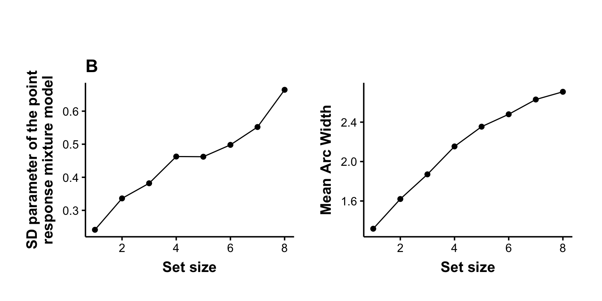

Exp. 1: Exploratory Data Analysis
load the preprocessed data
subject age experimentorder blocknumber trialnumber setsize position1
1 21 19 1 1 1 6 2
2 21 19 1 1 2 3 4
3 21 19 1 1 3 8 1
4 21 19 1 1 4 8 1
5 21 19 1 1 5 3 3
6 21 19 1 1 6 4 2
position2 position3 position4 position5 position6 position7 position8
1 3 4 5 6 8 NA NA
2 7 8 NA NA NA NA NA
3 2 3 4 5 6 7 8
4 2 3 4 5 6 7 8
5 5 7 NA NA NA NA NA
6 3 4 6 NA NA NA NA
p1color p2color p3color p4color p5color p6color p7color
1 -1.6057029 2.42600766 1.588250 0.2443461 2.967060 -2.216568 NA
2 -3.0194196 1.55334303 1.884956 NA NA NA NA
3 -2.3038346 -0.08726646 1.308997 -1.5184364 -0.715585 2.984513 1.0122910
4 -0.2617994 2.77507351 -2.495821 -1.7453293 -2.007129 1.343904 0.5235988
5 1.0297443 2.72271363 -3.106686 NA NA NA NA
6 3.0194196 2.16420827 -1.396263 2.4260077 NA NA NA
p8color colorwheel0degree testposition colorcorrectangle
1 NA 246 37 111 5 0.2443461
2 NA 168 120.5 20.5 4 -3.0194196
3 -1.186824 233.5 54 143.5 5 -0.7155850
4 1.745329 106.5 139 66.5 7 0.5235988
5 NA 170.5 119.5 19.5 3 1.0297443
6 NA 73 135 175 2 3.0194196
responseangle resperr arc points pointstotal rtclick1 rtclick2
1 -1.0995574 -1.3439035 2.66162711 0.00 0.00 5.066951 4.0985544
2 -2.7750735 0.2443461 1.24791042 144.25 144.25 4.395522 10.5490500
3 2.8797933 -2.6878070 4.16261027 0.00 144.25 3.878913 3.2489131
4 -0.6283185 -1.1519173 0.04363323 0.00 144.25 5.271928 0.1996289
5 0.8901179 -0.1396263 1.98094870 123.25 267.50 2.115702 5.8318740
6 -1.9722221 1.2915436 3.62155820 76.25 343.75 3.881281 2.9326148
position encodingtime delay pcolor exp_type colorwheel0degreeR
1 NA 0.1 1 NA SetS 246.0
2 NA 0.1 1 NA SetS 168.0
3 NA 0.1 1 NA SetS 233.5
4 NA 0.1 1 NA SetS 106.5
5 NA 0.1 1 NA SetS 170.5
6 NA 0.1 1 NA SetS 73.0
colorwheel0degreeG colorwheel0degreeB RawAnglePosition CorrectedWheelAngle
1 37.0 111.0 0.0000000 0.0000000
2 120.5 20.5 1.7627825 -1.7627825
3 54.0 143.5 -0.4363323 0.4363323
4 139.0 66.5 2.5656340 -2.5656340
5 119.5 19.5 1.7278760 -1.7278760
6 135.0 175.0 -2.1991149 2.1991149
part1_type part2_type exp_cond anglediff_c presentedColor responseColor
1 SetS SetS SetS_SetS -1.29536155 0.2443461 -1.099557
2 SetS SetS SetS_SetS 0.29288807 -1.2566371 -1.012291
3 SetS SetS SetS_SetS -2.63926508 -1.1519173 2.443461
4 SetS SetS SetS_SetS -1.10337534 3.0892328 1.937315
5 SetS SetS SetS_SetS -0.09108437 2.7576202 2.617994
6 SetS SetS SetS_SetS 1.34008562 0.8203047 2.111848Arc width is affected by set size, encoding duration and retention interval
pa1 <- exp1_data |>
filter(exp_type == "SetS") |>
ggplot(aes(resperr, color=as.factor(setsize))) +
geom_density(linewidth=1) +
scale_x_continuous('Point response angle difference (rad)') +
theme(legend.position="none") +
ylab('\nDensity') +
ggtitle('A')
pa2 <- exp1_data |>
filter(exp_type == "SetS") |>
ggplot(aes(arc, color=as.factor(setsize))) +
geom_density(linewidth=1) +
scale_color_discrete('Set size') +
scale_x_continuous("Arc width (rad)") +
ylab("") +
theme(legend.justification.inside = c(1,1),
legend.position = "inside")
pa1+pa2Plot the effect of setsize on sd(angle error) and the mean(arcwidth)
exp1_data |>
filter(exp_type == "SetS") |>
group_by(setsize, subject) |>
summarise(err = sd(resperr)) |>
ggplot(aes(setsize, err)) +
stat_summary(geom="pointrange") +
stat_summary(geom="line") +
ylab('SD(angle error)') +
ggtitle('B')exp1_data |>
filter(exp_type == "SetS") |>
group_by(setsize, subject) |>
ggplot(aes(setsize, arc)) +
stat_summary(geom="pointrange") +
stat_summary(geom="line") +
ylab('Mean Arc Width')Fit 2-component mixture model to the setsize data
ss_mm <- exp1_data |>
filter(exp_type == "SetS") |>
group_by(subject,setsize) |>
do({fit_mixtur(., model = "2_component", unit = "radians", id_var = "setsize",
response_var = "responseColor", target_var = "presentedColor")}) |>
mutate(sdrad = bmm::k2sd(kappa)) |>
filter(!is.infinite(sdrad))
pb1 <- ss_mm |>
group_by(setsize) |>
summarise(sd = mean(sdrad, na.rm = TRUE)) |>
ggplot(aes(setsize, sd)) +
stat_summary(geom="point", size=2) +
stat_summary(geom="line") +
ylab("SD parameter of the point\nresponse mixture model") +
xlab("Set size") +
ggtitle('B')
pb2 <- exp1_data |>
filter(exp_type == "SetS") |>
group_by(setsize, subject) |>
ggplot(aes(setsize, arc)) +
stat_summary(geom="point", size=2) +
stat_summary(geom="line") +
ylab('Mean Arc Width') +
xlab('Set size')
pb1+pb2
ss_arc <- exp1_data |>
filter(exp_type == "SetS") |>
group_by(subject) |>
mutate(arc_subj = mean(arc)) |>
group_by(setsize) |>
summarise(arc_mean = mean(arc),
arc_se = sd(arc-arc_subj)/sqrt(length(arc)),
raw_sd = sd(resperr))
ss_mm1 <- ss_mm |>
group_by(subject) |>
mutate(sd_subj = mean(sdrad)) |>
group_by(setsize) |>
summarise(sd = mean(sdrad),
sd_se = sd(sd-sd_subj)/sqrt(length(sd)),
kappa = mean(kappa),
pmem = mean(p_t))
ss_joint <- ss_arc |>left_join(ss_mm1)
lm(ss_joint$sd ~ ss_joint$arc_mean) |>summary()
Call:
lm(formula = ss_joint$sd ~ ss_joint$arc_mean)
Residuals:
Min 1Q Median 3Q Max
-0.041326 -0.025108 -0.000027 0.011967 0.071657
Coefficients:
Estimate Std. Error t value Pr(>|t|)
(Intercept) -0.09136 0.06469 -1.412 0.207598
ss_joint$arc_mean 0.25269 0.02951 8.562 0.000139 ***
---
Signif. codes: 0 '***' 0.001 '**' 0.01 '*' 0.05 '.' 0.1 ' ' 1
Residual standard error: 0.03894 on 6 degrees of freedom
Multiple R-squared: 0.9243, Adjusted R-squared: 0.9117
F-statistic: 73.3 on 1 and 6 DF, p-value: 0.0001394pc1 <- ss_joint |>
ggplot(aes(sd, arc_mean)) +
geom_point(size=2) +
# geom_line() +
geom_smooth(method=lm, se=F) +
#geom_errorbarh(aes(xmin=sd_mean-1.96*sd_se, xmax=sd_mean+1.96*sd_se), height=0.5) +
#geom_errorbar(aes(ymin= arc_mean-1.96*arc_se, ymax=arc_mean+1.96*arc_se), width=0.5) +
xlab("SD parameter of the point\nresponse mixture model") +
ylab("Mean arc width") +
ggtitle('C')
pc1Plot the effect of time on sd(angle error) and the mean(arcwidth)
exp1_data |>
filter(exp_type == "Time") |>
group_by(encodingtime, delay, subject) |>
summarise(err = sd(resperr)) |>
Rmisc::normDataWithin("subject","err") |>
ggplot(aes(encodingtime, errNormed, color=as.factor(delay))) +
stat_summary(geom="pointrange") +
stat_summary(geom="line")+
ylab('SD(angle error)') theme(legend.position = "none")List of 1
$ legend.position: chr "none"
- attr(*, "class")= chr [1:2] "theme" "gg"
- attr(*, "complete")= logi FALSE
- attr(*, "validate")= logi TRUEexp1_data |>
filter(exp_type == "Time") |>
group_by(encodingtime, delay, subject) |>
summarise(arc = mean(arc)) |>
Rmisc::normDataWithin("subject","arc") |>
ggplot(aes(encodingtime, arcNormed, color=as.factor(delay))) +
stat_summary(geom="pointrange") +
stat_summary(geom="line")+
ylab('Mean Arc Width') +
scale_color_discrete('Delay')Fit 2-component mixture model to the time data
time_mm <- exp1_data |>
filter(exp_type == "Time") |>
group_by(encodingtime,delay, subject) |>
mutate(id = paste0(encodingtime, "_", delay)) |>
do({fit_mixtur(., model = "2_component", unit = "radians", id_var = "id",
response_var = "responseColor", target_var = "presentedColor")}) |>
select(-id) |>
mutate(sdrad = bmm::k2sd(kappa))
pd1 <- time_mm |>
ggplot(aes(encodingtime, sdrad, color=as.factor(delay))) +
stat_summary(geom="point", size=2) +
stat_summary(geom="line")+
ylab("SD parameter of the point\nresponse mixture model") +
xlab('Encoding time') +
theme(legend.position= "") +
ggtitle('D')
pd2 <- exp1_data |>
filter(exp_type == "Time") |>
group_by(encodingtime, delay, subject) |>
summarise(arc = mean(arc)) |>
Rmisc::normDataWithin("subject","arc") |>
ggplot(aes(encodingtime, arcNormed, color=as.factor(delay))) +
stat_summary(geom="point", size=2) +
stat_summary(geom="line")+
ylab('Mean Arc Width') +
xlab('Encoding time') +
scale_color_discrete('Delay') +
theme(legend.justification.inside = c(1,1),
legend.position = "inside")
pd1+pd2time_arc <- exp1_data |>
filter(exp_type == "Time") |>
group_by(subject) |>
mutate(arc_subj = mean(arc)) |>
group_by(encodingtime, delay) |>
summarise(arc_mean = mean(arc),
arc_se = sd(arc-arc_subj)/sqrt(length(arc)))
time_mm1 <- time_mm |>
group_by(subject) |>
mutate(sd_subj = mean(sdrad)) |>
group_by(encodingtime, delay) |>
summarise(sd = mean(sdrad),
sd_se = sd(sd-sd_subj)/sqrt(length(sd)),
kappa = mean(kappa),
pmem = mean(p_t))
time_joint <- time_arc |>left_join(time_mm1)
lm(time_joint$sd ~ time_joint$arc_mean) |>summary()
Call:
lm(formula = time_joint$sd ~ time_joint$arc_mean)
Residuals:
Min 1Q Median 3Q Max
-0.0167059 -0.0008948 0.0034347 0.0049329 0.0088264
Coefficients:
Estimate Std. Error t value Pr(>|t|)
(Intercept) -0.32306 0.04895 -6.599 0.000305 ***
time_joint$arc_mean 0.58462 0.04769 12.258 5.51e-06 ***
---
Signif. codes: 0 '***' 0.001 '**' 0.01 '*' 0.05 '.' 0.1 ' ' 1
Residual standard error: 0.009183 on 7 degrees of freedom
Multiple R-squared: 0.9555, Adjusted R-squared: 0.9491
F-statistic: 150.3 on 1 and 7 DF, p-value: 5.51e-06pe1 <- time_joint |>
ggplot(aes(sd, arc_mean)) +
geom_point(size=2) +
# geom_line() +
geom_smooth(method=lm, se=F) +
#geom_errorbarh(aes(xmin=sd_mean-1.96*sd_se, xmax=sd_mean+1.96*sd_se), height=0.5) +
#geom_errorbar(aes(ymin= arc_mean-1.96*arc_se, ymax=arc_mean+1.96*arc_se), width=0.5) +
xlab("SD parameter of the point\nresponse mixture model") +
ylab("Mean arc width") +
ggtitle('E')
pe1
Combine all figures
time_joint <- mutate(time_joint, procedure="Time")
ss_joint <- mutate(ss_joint, procedure="Set Size")
both <- bind_rows(time_joint, ss_joint)
ggplot(both, aes(sd, arc_mean, color=procedure)) +
geom_point() +
geom_smooth(method="lm", se=F)